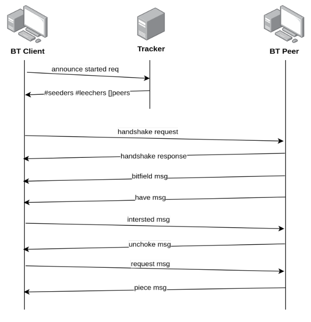

Inicio
Bienvenidos y bienvenidas al sitio de Taller de Programación I - Cátedra Deymonnaz de FIUBA.
Docentes de la cátedra
- Profesor: Ing. Pablo A. Deymonnaz
- Ayudantes:
- Ing. Juan Bono
- Ing. Martín Miletta
- Agustín Firmapaz
- Mauro Nicolás Di Pietro
- Mauro Toscano
- Nicolás Longo
- Colaboradores:
- Alfonso Jose Campodonico Gonzalez
- Mauro Parafati
- Maximiliano Ian Levi Fernandez
- Melina Lazzaro
- Asesor académico: Dr. Mariano Méndez
- Asesor de la industria: Federico Carrone
Horarios de clases
Las clases serán los días lunes de 18 a 22 hs.
Desarrollo del Proyecto
En la materia vamos a trabajar con el lenguaje de programación Rust.
Desarrollaremos un Proyecto a partir de la sexta semana de clases, en grupos de 4 (cuatro) personas.
Cada grupo tendrá el seguimiento del avance del trabajo semanalmente con un docente de la cátedra.
Materias Correlativas
Las materias correlativas vigentes necesarias para poder cursar la materia dependen de la Carrera y Plan que esté cursando el estudiante:
-
Ingeniería en Informática:
- Estructura del Computador (66.70)
- Algoritmos y Programación II (75.41)
Análisis Numérico (75.12)- a partir de la Actualización del Plan de Ing. Informática 2021, no se requiere esta correlatividad.
-
Licenciatura en Análisis de Sistemas (1986):
- Organización del Computador (75.03)
- Algoritmos y Programación II (75.41)
-
Licenciatura en Análisis de Sistemas (2014):
- Organización del Computador (95.57)
- Algoritmos y Programación III (95.02)
-
Ingeniería en Electrónica (2009):
- Algoritmos y Programación II (95.12)
Bibliografía
La bibliografía recomendad de la materia para el aprnedizaje del lenguaje Rust es:
- The Rust Programming Language, Steve Klabnik y Carol Nichols. Es el libro oficial del lenguaje, y es la referencia principal para aprender el lenguaje.
- Programming Rust, Jim Blandy, Jason Orendorff.O'Reilly Media, Inc. Es un libro muy bueno que explica los conceptos del lenguaje de forma exhaustiva con profundidad.
- Rust in Action, Tim McNamara
Material para aprender Rust
Type System
Ownership
Otros recursos de interés
Otros recursos para consultar:
- El Lenguaje de Programación Rust. Una guía de referencia en español.
- Rust Language Cheat Sheet. Un resumen de los elementos del lenguaje, para tener a mano.
Artículos de blogs
Clases
- Clase 1 - Introducción a Rust
- Clase 2 - Ownership, Lifetimes, Traits, Generics
- Clase 3 - Concurrencia / Procesos y Threads / Channels y Locks en Rust
- Clase 4 - Introducción a Redes / Sockets en Rust
- Clase 5 - Modelo Cliente / Servidor y Protocolo HTTP
- Clase 6 - Testing
- Clases adicionales
- Flujos de desarrollo en GIT
- GTK
- Demos - Cómo preparar demos y presentaciones del proyecto.
Captura inminente
Fecha límite de entrega: lunes 3 de Abril de 2023 a las 18 hs
Introducción
El ajedrez es un juego de tablero entre dos contrincantes en el que cada uno dispone al inicio de 16 piezas móviles que se colocan sobre un tablero dividido en 64 casillas alternadas en colores blanco y negro, que constituyen las 64 posibles posiciones entre las que se mueven las piezas durante el desarrollo del juego.

Inicialmente, cada jugador cuenta con 16 piezas:
- Un Rey: Puede moverse en cualquier dirección (vertical, horizontal y diagonal), avanzando siempre una casilla (exceptuando el caso del enroque).
- Una Dama: Tambien puede moverse en cualquier dirección (vertical, horizontal y diagonal), avanzando tantas casillas como se desee.
- Dos Alfiles: Solo pueden moverse en direcciones diagonales, avanzando tantas casillas como se desee.
- Dos Caballos: Se mueve avanzando dos casillas en vertical y una horizontal, o viceversa (simplificando, se mueve en patron de L), siendo capaz de saltar por encima de otras piezas.
- Dos Torres: Solo pueden moverse en direcciones verticales y horizontales, avanzando tantas casillas como se desee.
- Ocho peones: Puede avanzar una o dos casillas hacia adelante en su primer movimiento, y avanzar solo una en los siguientes. A diferencia de las demas piezas, el peon no puede retroceder, y solo puede capturar piezas que se encuentren a una casilla de distancia en direccion diagonal (hacia adelante). Para este ejercicio, ignoraremos la captura de peon al paso.
Consigna
Dada la posicion de dos piezas (una negra y una blanca), y solo dos piezas, determinar si:
- La pieza negra puede capturar a la blanca en su siguiente movimiento.
- La pieza blanca puede capturar a la negra en su siguiente movimiento.
- Ambas piezas pueden capturar a la otra en su siguiente movimiento.
- Ninguna de las piezas puede capturar a la otra.
Aclaración: es indistinto qué color se movera en el siguiente turno.
Para identificar cada pieza se utilizaran letras: Rey [R], Dama [D], Alfil [A], Caballo [C], Torre [T], Peon [P]. Las blancas se identificaran con letras minúsculas, mientras que las negras con letras MAYÚSCULAS. Cualquier casilla vacia sera representada con guion bajo [_]. Para cada fila del tablero, cada casillero se encuentra separado por un espacio [ ].
Ejemplo 1
_ _ _ _ _ _ _ _
_ _ _ _ _ _ _ _
_ _ _ D _ _ _ _
_ _ _ _ _ _ _ _
_ _ _ _ _ _ _ _
_ _ _ _ _ _ t _
_ _ _ _ _ _ _ _
_ _ _ _ _ _ _ _
En este caso, la dama negra esta en posicion para capturar a la torre blanca en su siguiente turno. Por ende, las negras capturan.
Ejemplo 2
_ _ _ _ _ _ _ _
_ _ _ _ _ _ _ _
_ _ _ _ _ _ P _
_ _ _ _ _ _ _ _
_ _ _ _ _ _ _ _
_ _ _ _ _ _ _ _
_ _ a _ _ _ _ _
_ _ _ _ _ _ _ _
En este caso, el alfil blanco esta en posicion para capturar al peon negro en su siguiente turno. Por ende, las blancas capturan.
Ejemplo 3
_ _ _ _ _ _ _ _
_ _ _ _ _ _ _ _
_ _ R _ _ _ _ _
_ _ t _ _ _ _ _
_ _ _ _ _ _ _ _
_ _ _ _ _ _ _ _
_ _ _ _ _ _ _ _
_ _ _ _ _ _ _ _
En este caso, la torre blanca esta en posicion de para capturar al rey negro (curiosamente, acabando en un jaque mate), pero el rey negro tambien podria capturar a la torre blanca. Por ende, es un empate.
Ejemplo 4
_ _ _ _ _ _ _ _
_ _ _ _ _ P _ _
_ _ _ _ _ _ _ _
_ _ d _ _ _ _ _
_ _ _ _ _ _ _ _
_ _ _ _ _ _ _ _
_ _ _ _ _ _ _ _
_ _ _ _ _ _ _ _
En este caso, ni la dama blanca ni el peon negro estan en posicion de capturar a la otra pieza. Por ende, todos pierden.
Formato de input
El input es un archivo en el filesystem con el formato de entrada del tablero. En la invocación del programa se debe proveer la ruta a ese archivo. Solo deberá ingresarse este argumento.
cargo run -- table.txt
Formato de output
El output sera un caracter impreso por terminal:
- B: indica que solo la pieza blanca pueden capturar.
- N: indica que solo la pieza negra pueden capturar.
- E: indica que ambas piezas pueden capturar.
- P: indica que ninguna pieza puede capturar.
En caso de que un error ocurriese, se deberá imprimir un mensaje con el siguiente formato: ERROR: [descripcion_del_error].
Algunas consideraciones
- La orientación del tablero dispondrá a las piezas blancas en la parte de abajo, y a las piezas negras en la parte de arriba (precisamente, igual que en la imagen presentada al principio de la consigna).
- Esto quiere decir que los peones blancos se moverán y capturarán hacia "arriba", mientras que los peones negros hacia "abajo".
- Escribir el programa sin clonar (.clone()) el input.
- Solamente debe imprimirse por terminal el caracter de output, o el error lanzado junto a su descripción.
Requerimientos no funcionales
Nota importante: El proyecto deberá realizarse de manera individual. Si se detecta una copia del trabajo entregado con respecto a la de otro/a estudiante, se podrá decidir hasta la exclusión del curso por considerarse conducta deshonestas y anti-académica.
Los siguientes son los requerimientos no funcionales para la resolución del proyecto:
- El proyecto deberá ser desarrollado en lenguaje Rust y debe compilarse con la versión 1.68 del compilador, usando las herramientas de la biblioteca estándar.
- Se deben implementar tests unitarios y de integración de las funcionalidades que se consideren más importantes.
- No se permite utilizar crates externos.
- El código fuente debe compilarse en la versión estable del compilador y no se permite utilizar bloques unsafe.
- El código deberá funcionar en ambiente Unix / Linux.
- El programa deberá ejecutarse en la línea de comandos.
- La compilación no debe arrojar warnings del compilador, ni del linter clippy.
- Las funciones y los tipos de datos (struct) deben estar documentados siguiendo el estándar de cargo doc.
- El código debe formatearse utilizando cargo fmt.
- Las funciones no deben tener una extensión mayor a 30 líneas. Si se requiriera una extensión mayor, se deberá particionarla en varias funciones.
- Cada tipo de dato implementado debe ser colocado en una unidad de compilación (archivo fuente) independiente.
Guías
- Ejercicios para practicar la sintaxis del lenguaje: rustlings
- Guía 1: Introducción a Rust (pdf)
- Guía 2: Ownership (pdf)
- Guía 3: Concurrencia (pdf)
- Guía 4: Sockets (pdf)
Guía de Ejercicios 1: Introducción a Rust
Ejercicio 1 - Ahorcado
El objetivo del ejercicio es implementar un programa de consola para jugar al ahorcado.
Bienvenido al ahorcado de FIUBA!
La palabra hasta el momento es: _ _ _ _ _ _
Adivinaste las siguientes letras:
Te quedan 5 intentos.
Ingresa una letra: r
La palabra hasta el momento es: _ _ _ _ _ r
Adivinaste las siguientes letras: r
Te quedan 5 intentos.
Ingresa una letra: c
Si se ingresa una letra que no forma parte de la palabra, se pierde un intento.
La lista de palabras se debe leer de un archivo de texto, donde cada línea del archivo contendrá una palabra. De esa lista, se deberá elegir una palabra (puede ser una selección secuencial de palabras).
El programa termina cuando se adivina correctamente la palabra pensada, o cuando se acabaron los intentos.
Tips:
- Recuerda que las variables son inmutables por default. Para cambiar el estado de una variable, se la debe declarar como mut.
- Se puede comparar Strings usando: ==
- Usa println!(...) para imprimir elementos en la salida estándar. Para imprimir una variable, puedes escribir algo como esto:
#![allow(unused)] fn main() { println!("Contenido: {}", s); }
- Para leer de la entrada estándar, se puede usar algo como esto:
#![allow(unused)] fn main() { io::stdin() .read_line(&mut v) .expect("Error leyendo la linea."); }
Parte B
Mostrar las letras que se ingresaron y que no forman parte de la palabra (las que hacen que se pierda un intento).
Verificar si se ingresó nuevamente una letra que ya estaba.
Parte C
Sobre la implementación de las funciones, modelizar una estructura de datos que represente al tipo de error de retorno. Por ejemplo: se agotaron los intentos. Basarse en el enum Result.
Ejercicio 2 - Contar palabras
Escribir un programa para contar las frecuencias de palabras únicas leídas de un archivo de entrada. Luego imprimirlas con sus frecuencias, ordenadas primero por las más frecuentes. Por ejemplo, dado este archivo de entrada:
La casa tiene una ventana
La ventana fue defenestrada
El programa debe imprimir:
ventana -> 2
La -> 2
casa -> 1
tiene -> 1
una -> 1
fue -> 1
defenestrada -> 1
Una solución básica consiste en leer el archivo línea por línea, convertirlo a minúsculas, dividir cada línea en palabras y contar las frecuencias en un HashMap. Una vez hecho esto, convertir el HashMap en una lista de pares de palabras y cantidad y ordenarlas por cantidad (el más grande primero) y por último imprimirlos.
Se debe seguir las siguientes recomendaciones:
- Para separar en palabras, se debe considerar los espacios en blanco, ignorando los signos de puntuación.
- Si la frecuencia de dos palabras es la misma, no importa el orden en el que aparecen las dos palabras en la salida impresa.
- No leer el archivo completo en memoria, se puede ir procesando línea por línea, o en conjuntos de líneas. Sí se puede mantener en memoria el hashmap completo.
- Usar solamente las herramientas de la biblioteca std del lenguaje.
Para leer un archivo línea por línea, se puede utilizar el método read_line.
Ejercicio 3 - Buscador Full-text
La búsqueda de texto está en todos lados. Desde encontrar un mensaje en redes sociales, productos en portales de comercio electrónico, o cualquier otra cosa en la web a través de Google.
En este ejercicio, construiremos un motor de búsqueda sencillo que pueda buscar en millones de documentos y clasificarlos según su relevancia.
El primer paso consiste en la preparación de los datos. Necesitamos construir el conjunto de datos sobre el que realizaremos las búsquedas, denominado corpus. Este conjunto será un grupo de archivos de texto plano (txt) que puede generarse a partir de artículos de Internet. Cada archivo será un documento que estará identificado por un id.
Luego se debe realizar la indexación: Se debe implementar una estructura conocida como de índice invertido. Que será una estructura de datos de tipo HashMap que contendrá como clave cada una de las palabras y como valor, el o los ids de documentos en los que aparece la palabra. Para este paso, se debe realizar el proceso de tokenización, es decir, obtener cada una de los tokens que conforman al documento, considerando las separaciones de los mismos por espacios en blanco o saltos de línea, y quitando los signos de puntuación. De estos tokens, se debe ignorar las palabras más usadas del lenguaje español (conocidas como stop words), por ejemplo, los artículos: la, el, las, los. Se debe considerar la frecuencia de cada token, es decir, la cantidad de veces que el mismo aparece en el documento. Ese valor debe ser almacenado para el ordenamiento de los resultados.
El último paso es implementar la búsqueda. Para ello, se debe solicitar al usuario una frase a buscar y aplicar la tokenización de la misma y la eliminación de las stop words. Se debe buscar los documentos que contengan los términos de búsqueda ingresados.
Luego se debe determinar la relevancia de cada documento resultado de la búsqueda. Para esto, se debe determinar el puntaje del documento. Esto se puede computar a partir de sumar las frecuencias de cada uno de los términos encontrados.
Para mejorar el cálculo de puntaje del documento, calcularemos la frecuencia inversa de documentos para un término (denominado tf-idf) dividiendo la cantidad de documentos (N) en el índice por la cantidad de documentos que contienen el término, y tomaremos el logaritmo.

donde:
- |D| es la cantidad de documentos del corpus.
- |d ∈ D : t ∈ d| es el número de documentos donde aparece el término t. Si el término no está en la colección se producirá una división-por-cero. Por lo tanto, se suele ajustar esta fórmula a 1 + |d ∈ D : t ∈ d|
Luego, multiplicaremos la frecuencia del término con la frecuencia inversa del documento durante nuestra clasificación, por lo que las coincidencias en términos que son raros en el corpus contribuirán más a la puntuación de relevancia.
Requerimientos no funcionales
Los siguientes son los requerimientos no funcionales para la resolución de los ejercicios:
- El proyecto deberá ser desarrollado en lenguaje Rust, usando las herramientas de la biblioteca estándar.
- No se permite utilizar crates externos. El único crate autorizado a ser utilizado es rand en caso de que se quiera generar valores aleatorios.
- El código fuente debe compilarse en la versión stable del compilador y no se permite utilizar bloques unsafe.
- El código deberá funcionar en ambiente Unix / Linux.
- El programa deberá ejecutarse en la línea de comandos.
- La compilación no debe arrojar warnings del compilador, ni del linter clippy.
- Las funciones y los tipos de datos (struct) deben estar documentadas siguiendo el estándar de cargo doc.
- El código debe formatearse utilizando cargo fmt.
- Las funciones no deben tener una extensión mayor a 30 líneas. Si se requiriera una extensión mayor, se deberá particionarla en varias funciones.
- Cada tipo de dato implementado debe ser colocado en una unidad de compilación (archivo fuente) independiente.
Guía de Ejercicios 2: Ownership en Rust
Ejercicio 1
Analizar las siguientes porciones de código y responder si el mismo compila o no. Explicar por qué sí o por qué no.
Si no se compila, ¿qué podrías cambiar para que compile?
fn main() { let mut s = String::from("hola"); let ref1 = &s; let ref2 = &ref1; let ref3 = &ref2; s = String::from("chau"); println!("{}", ref3.to_uppercase()); }
#![allow(unused)] fn main() { fn drip_drop() -> &String { let s = String::from("hello world!"); return &s; } }
fn main() { let s1 = String::from("hola"); let mut v = Vec::new(); v.push(s1); let s2: String = v[0]; println!("{}", s2); }
Ejercicio 2 - diff
Encontrar la diferencia entre dos archivos es un problema que es bastante conocido y estudiado.
La mayoría de las implementaciones usan el algoritmo de Myers, en este ejercicio, haremos que calcule la subsecuencia común más larga entre los dos archivos con el algoritmo LCS y use esa información para calcular su diferencia.
Este ejercicio se divide en hitos a cumplir.
Leer los dos archivos en dos vectores de líneas
En este hito, se debe implementar la función read_file_lines la cual debe tomar como parámetro la ruta al archivo y devolver un vector conteniendo las líneas del archivo.
Implementar el algoritmo LCS - Longest Common Subsequence
Longest Common Subsequence es un algoritmo conocido: dadas dos secuencias, ¿cuál es la subsecuencia más larga que aparece en ambas?
Si las secuencias de caracteres son a b c d y a d b c, la subsecuencia común más larga es a b c, porque estos caracteres aparecen en ambas secuencias en ese orden (notar que la subsecuencia no necesita ser consecutiva, sino que debe estar en orden).
Cuando se hace el diff entre dos archivos, queremos determinar cuáles línas deben ser agregadas o eliminadas entre ellos. Para lograr esto, necesitamos identificar las línas que son comunes entre ambos archivos. Esto se enmarca en lo que se conoce como un problema LCS -hay un buen video explicativo-: tenemos las dos secuencias de líneas y queremos encontrar la mayor subsecuencia de línas que aparecen en ambos archivos; estas líneas son la que no fueron modificadas y las otras líneas son las que fueron agregadas o eliminadas.
La solución incluye completar una grilla con los largos de subsecuencias. El siguiente es un fragmento de pseudocódigo que se puede usar como base para reimplementar en Rust:
#![allow(unused)] fn main() { let X and Y be sequences let m be the length of X, and let n be the length of Y C = grid(m+1, n+1) // recordar que .., es inclusivo para el límite inferior, pero excluye al superior for i := 0..m+1 C[i,0] = 0 for j := 0..n+1 C[0,j] = 0 for i := 0..m for j := 0..n if X[i] = Y[j] C[i+1,j+1] := C[i,j] + 1 else C[i+1,j+1] := max(C[i+1,j], C[i,j+1]) return C }
Usar el LCS para construir el diff
Implementar e invocar al siguiente pseudocódigo para imprimir el diff:
#![allow(unused)] fn main() { // C es la grilla computada por lcs() // X e Y son las secuencias // i y j especifican la ubicacion dentro de C que se quiere buscar cuando // se lee el diff. Al llamar a estar funcion inicialmente, pasarle // i=len(X) y j=len(Y) function print_diff(C, X, Y, i, j) if i > 0 and j > 0 and X[i-1] = Y[j-1] print_diff(C, X, Y, i-1, j-1) print " " + X[i-1] else if j > 0 and (i = 0 or C[i,j-1] >= C[i-1,j]) print_diff(C, X, Y, i, j-1) print "> " + Y[j-1] else if i > 0 and (j = 0 or C[i,j-1] < C[i-1,j]) print_diff(C, X, Y, i-1, j) print "< " + X[i-1] else print "" }
Requerimientos no funcionales
Los siguientes son los requerimientos no funcionales para la resolución de los ejercicios:
- El proyecto deberá ser desarrollado en lenguaje Rust, usando las herramientas de la biblioteca estándar.
- No se permite utilizar crates externos. El único crate autorizado a ser utilizado es rand en caso de que se quiera generar valores aleatorios.
- El código fuente debe compilarse en la versión stable del compilador y no se permite utilizar bloques unsafe.
- El código deberá funcionar en ambiente Unix / Linux.
- El programa deberá ejecutarse en la línea de comandos.
- La compilación no debe arrojar warnings del compilador, ni del linter clippy.
- Las funciones y los tipos de datos (struct) deben estar documentadas siguiendo el estándar de cargo doc.
- El código debe formatearse utilizando cargo fmt.
- Las funciones no deben tener una extensión mayor a 30 líneas. Si se requiriera una extensión mayor, se deberá particionarla en varias funciones.
- Cada tipo de dato implementado debe ser colocado en una unidad de compilación (archivo fuente) independiente.
Guía de Ejercicios 3: Concurrencia en Rust
Ejercicio 1 - Cuentas bancarias
El fragmento de código 1 hace uso de unsafe para poder mutar una variable global. Esto introduce condiciones de carrera sobre los datos (data races) que provocan que el programa falle de manera imprevista al correrlo repetidas veces. Es decir, el problema se presenta en alguno de los posibles escenarios de ejecución.
Corregir el programa haciendo uso de las abstracciones que provee Rust para el manejo de la concurrencia de manera que no se produzcan errores.
use std::thread; struct Account(i32); impl Account { fn deposit(&mut self, amount: i32) { println!("op: deposit {}, available funds: {:?}", amount, self.0); self.0 += amount; } fn withdraw(&mut self, amount: i32) { println!("op: withdraw {}, available funds: {}", amount, self.0); if self.0 >= amount { self.0 -= amount; } else { panic!("Error: Insufficient funds.") } } fn balance(&self) -> i32 { self.0 } } static mut ACCOUNT: Account = Account(0); fn main() { let customer1_handle = thread::spawn(move || unsafe { ACCOUNT.deposit(40); }); let customer2_handle = thread::spawn(move || unsafe { ACCOUNT.withdraw(30); }); let customer3_handle = thread::spawn(move || unsafe { ACCOUNT.deposit(60); }); let customer4_handle = thread::spawn(move || unsafe { ACCOUNT.withdraw(70); }); let handles = vec![ customer1_handle, customer2_handle, customer3_handle, customer4_handle, ]; for handle in handles { handle.join().unwrap(); } let savings = unsafe { ACCOUNT.balance() }; println!("Balance: {:?}", savings); }
Ejercicio 2 - ThreadPool
Un threadpool mantiene varios hilos de ejecución (threads) en espera de que el programa supervisor asigne tareas para su ejecución simultánea. Al mantener un grupo de threads, el modelo aumenta el rendimiento y evita la latencia en la ejecución debido a la frecuente creación y destrucción de threads para tareas de corta duración.
En este ejercicio se debe armar un threadpool sencillo haciendo uso de las herramientas para computación concurrente que nos provee la biblioteca estándar de Rust.
Para distribuir las tareas a realizar entre los threads del pool se puede utilizar una cola concurrente.
Consideraciones a tener en cuenta:
- La estructura de datos utilizada para distribuir el trabajo.
- ¿Que se hace cuando una tarea enviada al threadpool provoca que un thread muera? Esta situación no debería afectar a otros threads. Ademas tras la muerte de un thread, se debe crear otro de forma de que la cantidad total de threads en el pool no cambie.
- Cuando la threadpool es terminada o sale de scope todos los threads deberian finalizar.
El fragmento de código 2 muestra un ejemplo de uso:
fn main() { let pool = ThreadPool::new(4); for i in 0..4 { pool.spawn(move || { std::thread::sleep(std::time::Duration::from_millis(250 * i)); println!("This is Task {}", i); }); } std::thread::sleep(std::time::Duration::from_secs(2)); }
Ejercicio 3 - Contar palabras concurrente
Escribir un programa, basado en el ejercicio 2 de la guía 1, para contar las frecuencias de palabras únicas leídas desde varios archivos de entrada.
La lectura y procesamiento de los archivos debe ser realizada de forma concurrente. Una vez finalizado el procesamiento de los mismos, imprimirlos con sus frecuencias, ordenados primero por las más frecuentes.
Realizar las siguientes implementaciones y comparar los tiempos de ejecución:
- Un mapa de resultados parciales por thread (por archivo), unir las sumas parciales al hacer join(), utilizando el valor de retorno de los hilos.
- Un mapa de resultados parciales por thread, enviar las sumas parciales de los threads utilizando channels.
- Un mapa de resultados globales accedidos por thread.
Requerimientos no funcionales
Los siguientes son los requerimientos no funcionales para la resolución de los ejercicios:
- El proyecto deberá ser desarrollado en lenguaje Rust, usando las herramientas de la biblioteca estándar.
- No se permite utilizar crates externos. El único crate autorizado a ser utilizado es rand en caso de que se quiera generar valores aleatorios.
- El código fuente debe compilarse en la versión stable del compilador y no se permite utilizar bloques unsafe.
- El código deberá funcionar en ambiente Unix / Linux.
- El programa deberá ejecutarse en la línea de comandos.
- La compilación no debe arrojar warnings del compilador, ni del linter clippy.
- Las funciones y los tipos de datos (struct) deben estar documentadas siguiendo el estándar de cargo doc.
- El código debe formatearse utilizando cargo fmt.
- Las funciones no deben tener una extensión mayor a 30 líneas. Si se requiriera una extensión mayor, se deberá particionarla en varias funciones.
- Cada tipo de dato implementado debe ser colocado en una unidad de compilación (archivo fuente) independiente.
Guía de Ejercicios 4: Sockets en Rust
Ejercicio 1 - Introducción
Ítem A
Escribir un programa tal que el hilo main crea un thread hijo que actuará como cliente, mientras el padre actúa como servidor. La comunicación se establece para enviar y recibir un saludo, por ejemplo: Hola hijo y Buen día Papá.
Ítem B
Modificar el programa del ejercicio anterior para que el servidor pueda gestionar más de un cliente.
Ejercicio 2 - Mini Chat
Implementar un programa para armar una sala de chat.
El programa inicia y le pide un nickname al usuario. Luego, abre un socket servidor ligado a un puerto configurable. A continuación, realiza broadcasting del nickname a la subred, para después quedar escuchando mensajes.
Si recibe un mensaje de broadcast con un nickname, lo agrega a la lista de usuarios de la sala de chat, junto a la dirección IP de quien se lo envía.
Si recibe otro mensaje, se lo imprime por pantalla.
Para recibir un mensaje del usuario, se debe leer de la estrada estándar (stdin). Si se lo antecede con el nickname de destino, se lo envía a ese destinatario en particular. Con Enter, se transmite el mensaje.
Ejercicio 3 - FTP Honeypot
Introducción
Un honeypot es una aplicación que simula ser un servidor de otra aplicación mayor, para que cuando un usuario malicioso se conecte, ataque este servidor falso, permitiendo tomar registro de las técnicas de ataque que se utilizan en la red. En este trabajo práctico prototiparemos un honeypot de un servidor FTP.
Protocolo FTP
El protocolo FTP es un protocolo de texto, formado por mensajes delimitados por un salto de línea.
Los comandos son palabras en su mayoría de 4 letras, seguidos de un espacio que los separa de sus argumentos. El servidor responde con un código numérico y un texto descriptivo.
Cliente FTP
Los comandos que puede ejecutar el cliente son los siguientes
USER <username>: Envía un nombre de usuario para realizar login.PASS <password>: Envía un password para el usuario.SYST: Consulta información del sistemaLIST: Consulta los archivos contenidos en el directorio actualHELP: Consulta los comandos disponiblesPWD: Consulta el directorio actualMKD: Crea un directorioRMD: Elimina un directorio
Para simplificar el trabajo práctico, la transferencia de datos se realizará respondiendo en el mismo puerto por el cual se conectan inicialmente los clientes.
Esto implica que los comandos PASV y PORT no serán necesarios para transmitir información (por ejemplo con el comando LIST).
Servidor FTP
El servidor FTP responde con los siguientes mensajes:
- Cuando un cliente recién se conecta:
220 <newClient> - Cuando un cliente quiere operar sin haber hecho login:
530 <clientNotLogged> - Luego de que un cliente envía un comando
USER:331 <passRequired> - Si el usuario envía un comando que no es
PASSluego de un comandoUSER:530 <clientNotLogged> - Si el usuario realiza un login válido (el usuario enviado con
USERy la contraseña enviada conPASSson válidas, es decir, concuerdan con las configuradas):230 <loginSuccess> - Si el usuario realiza un login inválido:
530 <loginFailed>
Una vez que el cliente realizó un login exitoso, se habilitan varios comandos al cliente:
- Si el usuario envía el comando
SYST:215 <systemInfo> - Si el usuario envía el comando
HELP:214 <commands> - Si el usuario envía el comando
LIST, se realizará una respuesta en 3 partes
La primera línea será 150 <listBegin>
Luego enviará una línea por cada directorio cargado, con el siguiente formato:
drwxrwxrwx 0 1000 1000 4096 Sep 24 12:34 <nombre directorio>
Los directorios serán listados en orden alfabético.
Luego de enviar las líneas, enviará 226 <listEnd>.
- Si el usuario envía el comando
PWD:257 <currentDirectoryMsg> - Si el usuario envía el comando
MKD <nombreDir>, intenta agregar ````'' a la lista de directorios existentes responde: 257 "<nombreDir> <mkdSuccess>"en caso de que el directorio no existía.550 <mkdFailed>si ya existía
- Si el usuario envía el comando
RMD <nombreDir>intenta remover"<nombreDir>"de la lista de directorios y responde:250 <rmdSuccess>si el directorio existe.550 <rmdFailed>si no existía.
- Finalmente, el usuario puede pedirle al servidor que termine la conexión enviando la palabra
QUIT. En tal caso el servidor responde con221 <quitSuccess>y ambos cierran sus conexiones ordenadamente.
Cabe destacar que la entrada de comandos puede no terminar con QUIT, debiendo el cliente cerrar su conexión al llegar al final del stream y el servidor liberar sus recursos adecuadamente.
Configuración de mensajes
El servidor FTP lee un archivo de configuración las siguientes variables
user: Usuario para realizar loginpassword: Password para realizar loginnewClient: Mensaje enviado a un cliente recién conectadoclientNotLogged: Mensaje enviado a un cliente que quiere operar sin haber hecho loginpassRequired: Mensaje de solicitud de passwordloginSuccess: Mensaje de password aceptadologinFailed: Mensaje de password rechazadosystemInfo: Mensaje de información del sistemacommands: Mensaje con los comandos disponiblesunknownCommand: Mensaje de comando inválidoquit: Mensaje de desconexión del usuario
El archivo de configuración posee un formato ```clave=valor`'', y debe ser cargado al iniciar la aplicación. No se validará que se encuentren todas las claves necesarias, en caso de faltar una clave necesaria, es a decisión del desarrollador cómo contemplar este caso.
Formato de Línea de Comandos
Servidor
./server <puerto/servicio> <configuracion>
Donde <puerto/servicio> es el puerto TCP (o servicio) en donde estará escuchando la conexiones entrantes, <configuracion> el archivo con las variables del servidor.
Cliente
El cliente se ejecuta utilizando el siguiente formato de línea de comandos
./client <ip/hostname> <puerto/servicio>
El cliente se conectará al servidor corriendo en la máquina con dirección IP <ip> (o <hostname>), en el puerto (o servicio) TCP <puerto/servicio>.
Requerimientos no funcionales
Los siguientes son los requerimientos no funcionales para la resolución de los ejercicios:
- El proyecto deberá ser desarrollado en lenguaje Rust, usando las herramientas de la biblioteca estándar.
- No se permite utilizar crates externos. El único crate autorizado a ser utilizado es rand en caso de que se quiera generar valores aleatorios.
- El código fuente debe compilarse en la versión stable del compilador y no se permite utilizar bloques unsafe.
- El código deberá funcionar en ambiente Unix / Linux.
- El programa deberá ejecutarse en la línea de comandos.
- La compilación no debe arrojar warnings del compilador, ni del linter clippy.
- Las funciones y los tipos de datos (struct) deben estar documentadas siguiendo el estándar de cargo doc.
- El código debe formatearse utilizando cargo fmt.
- Las funciones no deben tener una extensión mayor a 30 líneas. Si se requiriera una extensión mayor, se deberá particionarla en varias funciones.
- Cada tipo de dato implementado debe ser colocado en una unidad de compilación (archivo fuente) independiente.
Proyectos de cuatrimestres anteriores
A modo de referencia, se detallan a continuación los proyectos realizados en cuatrimestres anteriores:
Proyecto: Redis Oxidado - 1er Cuatrimestre 2021
Introducción
Redis es un almacenamiento principalmente en memoria, usado como una Base de Datos de tipo clave / valor en memoria, como también como caché y broker de mensajes, con opción a persistencia de los datos.
Redis soporta distintos tipos de estructuras de datos: strings, listas, hashmaps, sets, sets ordenados, bitmaps, entre varios otros.
Redis tiene una muy buena performance, dado que trabaja con los datos en memoria. Es posible persistir los datos periódicamente a un almacenamiento de disco.
Soporta otras funcionalidades como: transacciones, publishers/suscribers, clave con un tiempo de vida limitado, réplicas asincrónicas distribuidas, entre otras. Se puede utilizar clientes Redis desde la mayoría de los lenguajes de programación. Es un proyecto open source. Es una base de datos muy popular (la de mayor uso del tipo clave / valor).
Los usos principales de Redis son como cache de aplicación para mejorar los tiempos de latencia de una aplicación (y aumentar la capacidad de procesamiento de operaciones -requests- por segundo), para almacenar datos de sesión de los usuarios, o funcionalidades como limitar la cantidad de pedidos que puede realizar un cliente en cierto tiempo (rate limiter), para prevenir ataques de denegación de servicio, por ejemplo.
Otros casos de uso de Redis son la implementación del pasaje de mensajes entre publicadores y suscriptores de ciertos tipos de mensajes (que se suscriben a mensajes de algún tópico), o la implementación de colas de tareas para el procesamiento en paralelo de pedidos.
Objetivo del Proyecto
El objetivo del proyecto es implementar un Servidor Redis con funcionalidades acotadas, que se detallan en el presente enunciado.
Se presente emular, en la medida de lo posible, el proceso de desarrollo de la Industria de Software.
Criterios de Aceptación y Corrección del Proyecto
Para el desarrollo del proyecto, se deberá observar los siguientes lineamientos generales:
-
[Testing] Se deberá implementar testing unitario automatizado, utilizando las herramientas de Rust de los métodos y funciones relevantes implementados.
Se deberá implementar tests de integración automatizados, utilizando un cliente de Redis para el lenguaje Rust. Se podrá utilizar para ello, un crate externo que es la implementación de la biblioteca cliente de Redis. -
[Manejo de Errores] Deberá hacerse un buen uso y administración de los casos de error, utilizando para ello, las estructuras y herramientas del lenguaje, escribiendo en forma lo más idiomática posible el tratamiento.
-
[Control de versiones] Se deberá utilizar la herramienta git, siguiendo las recomendaciones de la cátedra. En particular, se deberá utilizar la metodología GitHub Flow para el trabajo con ramas (branches) y la entrega continua del software.
-
[Trabajo en equipo] Se deberá adecuar, organizar y coordinar el trabajo al equipo, realizando tareas como revisión de código cruzada entre pares de una funcionalidad en un pull request de git.
-
[Merge de Branchs] Para poder hacer el merge de un branch de una funcionalidad, todos los tests pasan de forma satisfactoria.
Evaluaciones
El desarrollo del proyecto tendrá un seguimiento directo semanal por parte del docente a cargo del grupo.
Se deberá desarrollar y presentar los avances y progreso del trabajo semana a semana (simulando un sprint de trabajo). Cada semana, cada docente realizará una valoración del estado del trabajo del grupo.
El progreso de cada semana deberá ser acorde a lo que se convenga con el docente para cada sprint. Si el mismo NO cumple con la cantidad de trabajo requerido, el grupo podrá estar desaprobado de forma prematura de la materia, a consideración del docente.
Se deja constancia que las funcionalidades requeridas por este enunciado son un marco de cumplimiento mínimo y que pueden haber agregados o modificaciones durante el transcurso del desarrollo por parte del docente a cargo, que formarán parte de los requerimientos a cumplir. Cabe mencionar que estos desvíos de los requerimientos iniciales se presentan en situaciones reales de trabajo con clientes.
Finalización del Proyecto
El desarrollo del proyecto finaliza el último día de clases del cuatrimestre. En esa fecha, cada grupo deberá realizar una presentación final y se hará una evaluación global del trabajo.
Requerimientos no funcionales
Los siguientes son los requerimientos no funcionales para la resolución de los ejercicios:
- El proyecto deberá ser desarrollado en lenguaje Rust, usando las herramientas de la biblioteca estándar.
- No se permite utilizar crates externos. El único crate autorizado a ser utilizado es rand en caso de que se quiera generar valores aleatorios.
- El código fuente debe compilarse en la versión stable del compilador y no se permite utilizar bloques unsafe.
- El código deberá funcionar en ambiente Unix / Linux.
- El programa deberá ejecutarse en la línea de comandos.
- La compilación no debe arrojar warnings del compilador, ni del linter clippy.
- Las funciones y los tipos de datos (struct) deben estar documentadas siguiendo el estándar de cargo doc.
- El código debe formatearse utilizando cargo fmt.
- Las funciones no deben tener una extensión mayor a 30 líneas. Si se requiriera una extensión mayor, se deberá particionarla en varias funciones.
- Cada tipo de dato implementado debe ser colocado en una unidad de compilación (archivo fuente) independiente.
Requerimientos Funcionales
Las funcionalidades a implementar importantes requeridas
-
[1] Arquitectura: el programa a implementar sigue al modelo cliente-servidor, recibiendo solicitudes de servicio (requests) a través de la red (mediante sockets), y debe poder proveer servicio a mas de un cliente simultáneamente mediante el uso de threads.
-
[2] Configuración: el servidor deber poder ser configurado mediante un archivo de configuración, nombrado
redis.confy cuya ubicación se pasa por argumento de línea de comando:$ ./redis-server /path/to/redis.conf.
Las opciones de configuracion minimas son:verbose: un valor entero indicando si debe imprimir mensajes por consola, indicando el funcionamiento interno del servidor. Los mensajes a imprimir se dejan a criterio de la implementación.port: un valor entero indicando el puerto sobre el cual el servidor escucha para recibir requests.timeout: un valor entero indicando cuántos segundos esperar a que un cliente envíe un comando antes de cerrar la conexión. Si el valor es 0 se deshabilita el timeout.dbfilename: un string indicando el nombre del archivo en el cual se persistirán los datos almacenados. El valor por defecto esdump.rdb.logfile: un string indicando el nombre del archivo en el cual se grabara el log.
-
[3] Logs: el servidor debe mantener un registro de las acciones realizadas y los eventos ocurridos en un archivo de log.
La ubicación del archivo de log estará especificada en el archivo de configuración.
Como requerimiento particular del Proyecto, NO se considerará válido que el servidor mantenga un file handle global, aunque esté protegido por un lock, y que se escriba directamente al file handle. La arquitectura deberá contemplar otra solución.
-
[4] Protocolo Redis de request y response: El programa deberá implementar un subconjunto del protocolo Redis tal como es especificado en la documentación. Se sugiere tener funcionalidad para parsear los requests, para validar los requests, para implementar la lógica de cada comando, y que estas partes estén bien modularizadas.
En particular, no deben usarse expresiones regulares para desglosar los parámetros de los requests.
Los strings enviados y recibidos como parte del protocolo pueden ser strings UTF-8, y no necesariamente deben cumplir con el requerimiento de ser binary safe, i.e. no necesariamente son strings binarios arbitrarios, sino strings UTF-8 bien formados.
-
[5] Almacenamiento de datos: Los datos almacenados por el servidor deben estar en una estructura de datos global en memoria.
De manera automática, se debe almacenar periódicamente el contenido de los datos a un archivo cuya ubicación está especificada en el archivo de configuración mediante el parámetro
dbfilename. Al iniciarse el servidor, si este archivo existe, se deben cargar los datos desde el mismo. En otras palabras, si el servidor se detiene y reinicia, los datos deben volver a estar disponibles.Se deberá implementar la serialización y deserialización de la estructura de datos en memoria. Se reitera que para realizar esta tarea NO está permitido el uso de crates externos.
-
[6] Tipos de datos soportados: Los tipos de datos soportados por el servidor debe incluir strings, lists, y sets, pero NO
sorted setsohashes. -
[7] Vencimiento de claves (key expiration): el servidor debe proveer funcionalidad para setear un tiempo de expiración sobre una clave, de tal manera que transcurrido el tiempo indicado, la clave y su valor se eliminan automáticamente del conjunto de datos almacenados.
-
[8] Pub/sub: el servidor debe proveer funcionalidad para soportar el paradigma de mensajería pub/sub, en el cual clientes que envían mensajes (publicadores) no necesitan conocer la identidad de los clientes que reciben estos mensajes.
En cambio, los mensajes publicados se envían a un canal, y los clientes expresan interés en determinados mensajes subscribiéndose a uno o mas canales, y sólo reciben mensajes de estos canales, sin conocer la identidad de los publicadores. Para esto, el servidor debe mantener un registro de canales, publicadores y subscriptores. Para mas detalle, consultar la documentación de Redis.
Comandos que deben implementarse y soportarse
A continuación se lista los comandos que debe implementarse, separado.
Comandos del grupo server
- [9] info El comando INFO retorna información y estadísticas sobre el servidor en un formato fácil de parsear por computadores y fácil de leer por humanos.
- [10] monitor MONITOR es un comando de depuración que imprime al cliente cada comando procesado por el servidor. Puede ayudar entender qué está sucediendo en la base de datos.
- [11] flushdb Borra todas las claves de la base de datos. Este comando nunca falla.
- [12] config get El comando CONFIG GET se utiliza para leer los parámetros de configuración de un servidor en ejecución.
- [13] config set El comando CONFIG SET se utiliza para reconfigurar un servidor en tiempo de ejecución sin necesidad de reiniciarlo.
- [14] dbsize Retorna el numero de claves en la base de datos.
Comandos del grupo keys
-
[15] copy: Copia el valor almacenado en una clave origen a una clave destino.
-
[16] del: Elimina una clave específica. La clave es ignorada si no existe.
-
[17] exists: Retorna si la clave existe.
-
[18] expire: Configura un tiempo de expiración sobre una clave (la clave se dice que es volátil). Luego de ese tiempo de expiración, la clave es automáticamente eliminada.
-
[19] expireat: Tiene el mismo efecto que EXPIRE, pero en lugar de indicar el número de segundos que representa el TTL (time to live), toma el tiempo absoluto en el timestamp de Unix (segundos desde el 1ro de enero de 1970).
-
[20] keys: Retorna todas las claves que hacen match con un patrón.
-
[21] persist: Elimina el tiempo de expiración existente en una clave, tornando una clave volátil en persistente (una clave que no expira, dado que no tiene timeout asociado)
-
[22] rename: Renombra una clave a un nuevo nombre de clave.
-
[23] sort: Retorna los elementos contenidos en la lista o set, ordenados por la clave.
-
[24] touch: Actualiza el valor de último acceso a la clave.
-
[25] ttl: Retorna el tiempo que le queda a una clave para que se cumpla su timeout. Permite a un cliente Redis conocer cuántos segundos le quedan a una clave como parte del dataset.
-
[26] type: Retorna un string que representa el tipo de valor almacenado en una clave. Los tipos que puede retornar son: string, list, set (no consideramos los tipos de datos que no se implementan en el proyecto).
Comandos del grupo strings
-
[27] append Si la clave ya existe y es un string, este comando agrega el valor al final del string. Si no existe, es creada con el string vacío y luego le agrega el valor deseado. En este caso es similar al comando SET.
-
[28] decrby: Decrementa el número almacenado en una clave por el valor deseado. Si la clave no existe, se setea en 0 antes de realizar la operación.
-
[29] get: Devuelve el valor de una clave, si la clave no existe, se retorna el valor especial nil. Se retorna un error si el valor almacenado en esa clave no es un string, porque GET maneja solamente strings.
-
[30] getdel: obtiene el valor y elimina la clave. Es similar a GET, pero adicionalmente elimina la clave.
-
[31] getset: Atómicamente setea el valor a la clave deseada, y retorna el valor anterior almacenado en la clave.
-
[32] incrby: Incrementa el número almacenado en la clave en un incremento. Si la clave no existe, es seteado a 0 antes de realizar la operación. Devuelve error si la clave contiene un valor de tipo erróneo o un string que no puede ser representado como entero.
-
[33] mget: Retorna el valor de todas las claves especificadas. Para las claves que no contienen valor o el valor no es un string, se retorna el tipo especial nil.
-
[34] mset: Setea las claves data a sus respectivos valores, reemplazando los valores existentes con los nuevos valores como SET.
MSET es atómica, de modo que todas las claves son actualizadas a la vez. No es posible para los clientes ver que algunas claves del conjunto fueron modificadas, mientras otras no. -
[35] set: Setea que la clave especificada almacene el valor especificado de tipo string. Si la clave contiene un valor previo, la clave es sobreescrita, independientemente del tipo de dato contenido (descartando también el valor previo de TTL).
-
[36] strlen: Retorna el largo del valor de tipo string almacenado en una clave. Retorna error si la clave no almacena un string.
Comandos del grupo lists
-
[37] lindex: Retorna el elemento de la posición index en la lista almacenada en la clave indicada. El índice comienza en 0. Los valores negativos se pueden usar para determinar elementos desde el final de la lista: -1 es el último elemento, -2 es el anteúlitmo, y así.
Retorna error si el valor de esa clave no es una lista. -
[38] llen: Retorna el largo dela lista almacenada en la clave. Si la clave no existe, se interpreta como lista vacía, retornando 0. Se retorna error si el valor almacenado en la clave no es una lista.
-
[39] lpop Elimina y retorna el primer elemento de la lista almacenada en la clave. Se puede indicar un parámetro adicional count para indicar obtener esa cantidad de elementos.
-
[40] lpush: Inserta todos los valores especificados en el inicio de la lista de la clave especificada. Si no existe la clave, se crea inicialmente como una lista vacía para luego aplicar las operaciones. Se retorna error si la clave almacena un elemento que no es una lista.
-
[41] lpushx: Inserta los valores especificados al inicio de lalista, solamente si la clave existe y almacena una lista. A diferencia de LPUSH, no se realiza operación si la clave no existe.
-
[42] lrange: Retorna los elementos especificados de la lista almacenada en la clave indicada. Los inicios y fin de rango se consideran con el 0 como primer elemento de la lista. Estos valores pueden ser negativos, indicando que corresponde al final de la lista: -1 es el último elemento.
-
[43] lrem: Elimina la primer cantidad count de ocurrencias de elementos de la lista almacenada en la clave, igual al elemento indicado por parámetro. El parámetro cantidad influye de esta manera:
- count > 0: Elimina elementos iguales al indicado comenzando desde el inicio de la lista.
- count < 0: Elimina elementos iguales al indicado comenzando desde el final de la lista.
- count = 0: Elimina todos los elementos iguales al indicado.
-
[44] lset: Setea el elemento de la posición index de la lista con el elemento suministrado. Se retorna error si se indica un rango inválido.
-
[45] rpop: Elimina y obtiene el/los último/s elemento/s de la lista almacenada en la clave indicada. Por defecto, es un solo elemento, se puede indicar una cantidad.
-
[46] rpush: Inserta todos los valores especificados al final de la lista indicada en la clave. Si la clave no existe, se crear como una lista vacía antes de realizar la operación. Se retorna error si el elemento contenido no es una lista.
-
[47] rpushx: Inserta los valores especificados al final de la lista almacenada en la clave indicada, solamente si la clave contiene una lista. En caso contrario, no se realiza ninguna operación.
Comandos del grupo sets
-
[48] sadd: Agrega el elemento indicado al set de la clave especificada. Si la clave no existe, crea un set vacío para agregar el valor. Si el valor ya existía en el set, no se realiza agregado. Retorna error si el valor almacenado en la clave no es un set.
-
[49] scard: Retorna la cantidad de elementos del set almacenado en la clave indicada.
-
[50] sismember: Retorna si el elemento indicado es miembro del set indicado en la clave.
-
[51] smembers: Retorna todos los miembros del set almacenado en la clave indicada.
-
[52] srem: Elimina los miembros especificados del set almacenado en la clave indicada. Si la clave no existe, se considera como un set vacío, retornando 0. Retorna error si el valor almacenado en esa clave no es un set.
Comandos del grupo pubsub
-
[53] pubsub: Es un comando de análisis que permite inspeccionar el estado del sistema Pub/Sub.
La forma de este comando es:PUBSUB <subcommand> ... args ...Los subcomandos son:
-
CHANNELS: lista los canales activos. Un canal es lo que se conoce un canal Pub/Sub con uno o más suscriptores. Este comando admite un parámetro para especificar los patrones que deben cumplir los nombres de los canales, si no se especifica, se muestran todos.
Retorna una lista con los canales activos que cumplen con el patrón. -
NUMSUB: Devuelve el número de suscriptores de los canales especificados. El valor de retorno es la lista de canales y el número de suscriptores a cada uno. El formato es de una lista plana: canal, cantidad, canal, cantidad, ... El orden de la lista es el mismo que en los parámetros del comando.
-
NUMPAT: Este comando queda afuera del alcance del proyecto.
-
-
[54] publish: Envía (publica) un mensaje en un canal dado.
-
[55] subscribe: Suscribe al cliente al canal especificado.
-
[56] unsubcribe: Desuscribe al cliente de los canales indicados, si no se indica ninguno, lo desuscribe de todos.
Corriendo Redis y su cliente en Docker
- Instalar docker segun el sistema operativo que estes usando.
- Descargar y correr una imagen de docker con redis instalado:
docker run -d -p 6379:6379 --name redis-taller1 redis - Verificar que estar corriedo:
docker ps - Acceder a los logs de redis:
docker logs redis-taller1 - Ejecutar otro contenedor con la misma imagen, pero en modo interactivo y una shell:
docker exec -it redis-taller1 sh - Dentro de este contender, ejecutar el cliente:
redis-cli - Verificar que esta conectado al servidor redis:
127.0.0.1:6379> ping
PONG
- Ejecutar comandos redis:
127.0.0.1:6379> set name mark
OK
127.0.0.1:6379> get name
"mark"
127.0.0.1:6379> incr counter
(integer) 1
127.0.0.1:6379> incr counter
(integer) 2
127.0.0.1:6379> get counter
"2"
- Cerrar el cliente redis:
127.0.0.1:6379> exit
# exit
Agregado al proyecto: Monitor de Redis
Objetivo
Se debe implementar un sitio web para realizar operaciones sobre la base de datos Redis implementada en la primera parte del trabajo práctico.
Este servidor será similar a la demostración del sitio de Redis: https://try.redis.io/
Requerimientos Funcionales
Se debe implementar un servidor web que reciba pedidos (requests) de browsers, comunicándose con los mismos a través del protocolo HTTP/1.1. La descripción de este protocolo es la correspondiente a la RFC 2616.
El servidor debe escuchar pedidos HTTP en el puerto TCP 8080 y se comunicará con el servidor Redis desarrollado a partir del protocolo implementado.
Acerca de HTTP
El protocolo HTTP es usado globalmente para el intercambio de información en la Web desde 1990. Es orientado a cadenas de caracteres, HTTP es un protocolo de tipo cliente-servidor que opera con mensajes pedido/respuesta (request/reply). El cliente es el denominado agente de usuario (o user agent, en inglés) y puede ser un browser, un editor, un crawler u otro software para el usuario final. El servidor es un programa que acepta conexiones entrantes para responder a los pedidos (requests), con el envı́o de respuestas (replies).
HTTP provee encabezados (headers) para enviar el pedido, con métodos para indicar el tipo de pedido y define a la ubicación del recurso (por ejemplo, una "página web") referido a partir de su URI (Uniform Resource Identifier).
Funcionalidades a implementar
Al ingresar al sitio principal del sitio, se deberá mostrar una página web que deberá mostrar un recuadro donde el usuario podrá escribir comandos de Redis y debajo del mismo un botón "Enviar" que deberá invocar un comando HTTP POST. El servidor web deberá actuar como cliente Redis y conectarse al servidor implementado en la primera parte del Trabajo Práctico.
La respuesta del servidor Redis la deberá re-enviar el servidor web al browser y mostrar en un recuadro.
Se deberá implementar las comunicaciones HTTP entre el servidor web con mensajes del protocolo, respetando los headers.
Se deberá implementar el cliente del protocolo Redis hacia el servidor. NO se permite el uso de crates externos para la implementación del cliente Redis ni para el servidor HTTP.
Requerimientos no funcionales
- Valen los mismos requerimientos que para la primera parte del Trabajo Práctico.
Condiciones de aprobación
(Serán detalladas en clase)
Proyecto: MQTT Rústico - 2do Cuatrimestre 2021
Introducción
MQTT es un protocolo de mensajería basado en el patrón de comunicación publisher-suscriber y la arquitectura cliente-servidor. Dentro de sus principales características se puede destacar que es un protocolo liviano, simple y sencillo de implementar. Es un protocolo de capa de aplicación binario construido sobre TCP/IP, lo cual lo convierte en una forma de comunicarse sumamente eficiente con un overhead mínimo en la cantidad de paquetes que se envían a través de la red, a diferencia de otros protocolos de capa de aplicación, como por ejemplo HTTP.
Existen distintos estándares debido a que el protocolo ha ido evolucionando a través del tiempo (1.2, 3.1, 3.1.1, 5, etc). En particular, este proyecto estará centrado en la versión 3.1.1 del protocolo, cuya especificación puede encontrarse en el siguiente link: MQTT-v3.1.1
Su principal utilidad se da para implementar aplicaciones de IoT (Internet of Things), y se ha convertido en una forma estándar de comunicar dispositivos a través de la red. La principal causa de su éxito es que, gracias a sus características y funcionalidades ofrecidas, es un protocolo extremadamente simple, eficiente, sencillo de comprender e implementar y permite transferir datos a través de internet de forma confiable incluso por medio de canales de comunicación poco confiables.
Los requerimientos con los cuáles fue implementado el protocolo han sido son los siguientes:
- Que sea sencillo de implementar.
- Que se pueda especificar un nivel de calidad de servicio (Quality of Service, QoS) para la entrega de datos.
- Que sea liviano y eficiente en la red.
- Que sea agnóstico respecto de los datos que quieren comunicar las aplicaciones.
- Que permita a los clientes establecer sesiones para poder reconectarse en caso de sufrir una desconexión.
MQTT está basado en el patrón de comunicación publisher-subscriber. Esencialmente, es un patrón en el que existen clientes que quieren comunicar mensajes a través de tópicos, los cuáles son entregados a otros clientes que se encuentran suscritos a estos tópicos. Los clientes (publicadores y suscriptores) no se conocen entre sí, sino que envían los mensajes pertinentes con su respectivo tópico únicamente al servidor, cuya principal tarea es entregar los mensajes a los clientes que corresponda. Una buena ilustración que ejemplifica dicho patrón es la siguiente:

Como es posible observar, uno de los clientes envía un mensaje al servidor con el tópico temperatura, el cual llega al broker y es entregado a otros clientes que se encuentran suscritos a dicho tópico.
En la actualidad, existen distintas implementaciones de servidores MQTT, entre ellas:
- mosquitto, open-source y una de las más utilizadas.
- HiveMQ, que posee una versión abierta y otra paga.
- verneMQ.
A su vez, existen una serie de distintas implementaciones de clientes MQTT para distintos lenguajes.
Por último, se recomienda mirar los videos de la siguiente lista de reproducción, la cual explica a nivel general el funcionamientio del protocolo: MQTT Essentials
Objetivo del Proyecto
El objetivo del proyecto consiste en investigar el protocolo MQTT y realizar la implementación de una aplicación cliente y una aplicación servidor en el lenguaje de programación Rust. Además, la aplicación cliente deberá poseer una interfaz gráfica que permita interactuar con las distintas funcionalidades.
El objetivo secundario del proyecto consiste en el desarrollo de un proyecto real de software de mediana envergadura aplicando buenas prácticas de desarrollo de software, incluyendo entregas y revisiones usando un sistema de control de versiones.
Se espera que se haga un uso lo más idiomático posible del lenguaje de programación, siguiendo los estándares que éste promueve.
Evaluaciones
El desarrollo del proyecto tendrá un seguimiento directo semanal por parte del docente a cargo del grupo.
Se deberá desarrollar y presentar los avances y progreso del trabajo semana a semana (simulando un sprint de trabajo). Cada semana, o el o los docentes asignados a cada grupos realizarán una valoración del estado del trabajo del grupo.
El progreso de cada semana deberá ser acorde a lo que se convenga con el docente para cada sprint. Si el mismo NO cumple con la cantidad de trabajo requerido, el grupo podrá estar desaprobado de forma prematura de la materia, a consideración del docente.
Nota importante: Se deja constancia que las funcionalidades requeridas por este enunciado son un marco de cumplimiento mínimo y que pueden haber agregados o modificaciones durante el transcurso del desarrollo por parte del docente a cargo, que formarán parte de los requerimientos a cumplir. Cabe mencionar que estos desvíos de los requerimientos iniciales se presentan en situaciones reales de trabajo con clientes.
Finalización del Proyecto
El desarrollo del proyecto finaliza el último día de clases del cuatrimestre. En esa fecha, cada grupo deberá realizar una presentación final y se hará una evaluación global del trabajo.
Requerimientos no funcionales
Los siguientes son los requerimientos no funcionales para la resolución de los ejercicios:
- El proyecto deberá ser desarrollado en lenguaje Rust, usando las herramientas de la biblioteca estándar.
- No se permite utilizar crates externos. El único crate autorizado a ser utilizado es rand en caso de que se quiera generar valores aleatorios.
- El código fuente debe compilarse en la versión stable del compilador y no se permite utilizar bloques unsafe.
- El código deberá funcionar en ambiente Unix / Linux.
- El programa deberá ejecutarse en la línea de comandos.
- La compilación no debe arrojar warnings del compilador, ni del linter clippy.
- Las funciones y los tipos de datos (struct) deben estar documentadas siguiendo el estándar de cargo doc.
- El código debe formatearse utilizando cargo fmt.
- Las funciones no deben tener una extensión mayor a 30 líneas. Si se requiriera una extensión mayor, se deberá particionarla en varias funciones.
- Cada tipo de dato implementado debe ser colocado en una unidad de compilación (archivo fuente) independiente.
Requerimientos Funcionales
Protocolo
Configuración
El servidor MQTT tiene que poder ser inicializado con ciertos parámetros de configuración. Dichos parámetros deberán encontrarse especificados en un archivo de configuración con algún formato conveniente (no se puede utilizar ningún crate para parsear el archivo). Dentro de los parámetros de configuración, deben encontrarse:
- Puerto en cual el servidor escuchará por solicitudes (port).
- Path de archivo sobre el cuál se realizará un dump (ver más adelante).
- Intervalo de tiempo para el cual se realizará el dump (ver más adelante).
- Path de archivo de log (ver más adelante).
El path del archivo de configuración debe ser pasado como parámetro al ejecutable compilado del servidor.
Logging
Es necesario que el servidor loguee las distintas solicitudes que van llegando al mismo, así como también las distintas acciones que va realizando. El path del archivo donde se irán almacenando estos registros será especificado en el archivo de configuración.
El cumplimiento de este requerimiento puede ser implementado por dos vías:
- Implementando un log propio (No se considerará válido que el servidor mantenga un file handle global, aunque esté protegido por un lock, y que se escriba directamente al file handle. La arquitectura deberá contemplar otra solución.)
- Investigando y utilizando el crate tracing.
Autenticación
Una de las ventajas del protocolo MQTT es que ofrece la posibilidad de que los clientes deban autenticarse al conectarse al servidor. Para esto, dentro del mensaje de tipo CONNECT, deben especificar valores para los campos username y password. Para implementar esta funcionalidad, el servidor puede poseer un archivo de texto con los usuarios y sus contraseñas en texto plano.
Tipos de Paquetes
Se debe investigar e implementar los siguientes tipos de paquetes del protocolo:
- connect: Luego de establecida una conexión de red por el cliente hacia el servidor, el primer paquete enviado por el cliente es el CONNECT.
- connack: Paquete enviado por el servidor en respuesta a un paquete CONNECT recibido de un cliente.
- publish
- puback
- pubrel
- pubcomp
- subscribe
- suback
- unsubscribe
- unsuback
- pingreq
- pingresp
- disconnect
Quality of service (QoS)
- QoS 0 y 1 (de esta forma se encolan los mensajes de los clientes que están offline porque se desconectaron ungracefully y cuando se vuelven a conectar con el mismo clientId se le pueden enviar los mensajes).
Nota: no se implementará dentro del alcance del presente trabajo los mensajes de QoS 2.
Wilcards
- tiene que implementar las wildcards que se pueden utilizar para conformar un topic.
Sesiones persistentes
- tienen que implementar la persistent session (no hace falta que implementen el reenvío para los mensajes que no refieron el ACK, pero sí para los mensajes encolados).
Retained messages
- tienen implementar retained messages.
Last will & testament
- tienen que implementar last will & testament.
- se debe persistir la data necesaria para hacer el delivery de mensajes que no hayan podido ser entregados (respetando QoS nivel 1). Esto implica persistir id + mensajes no entregados.
Interfaz gráfica
La aplicación cliente deberá contar con una interfaz gráfica que permita interactuar con el servidor. Para realizar dicha aplicación, se debe utilizar el crate GTK. El grupo deberá investigar cómo utilizar dicho crate.
Requerimientos
La interfaz gráfica deberá contar con tres pestañas:
- Pestaña de conexión: Esta pestaña deberá contar con una serie de campos que permitan especificar los parámetros de conexión, y un botón para efectuar la misma. Los parámetros son:
- IP del servidor.
- Puerto del servidor al que hay que conectarse.
- clientId (el servidor debe poder discriminar entre clientes).
- Parámetros que deben ser incluidos en el paquete de tipo CONNECT:
- Nombre de usuario (username).
- Contraseña (password).
- lastWillMessage.
- lastWillTopic.
-
Pestaña de publicación: Esta pestaña permitirá enviar mensajes al servidor. En ella, se deberá poder ingresar un mensaje, un tópico, y tendrá que existir un botón para efectuar el envío. Una vez que el servidor confirme la recepción del mensaje, se deberá señalizar el éxito de la operación.
-
Pestaña de suscripción: Esta pestaña permitirá suscribirse a distintos tópicos y escuchar por los mensajes que sean publicados a estos. Para esto, se debe poder:
- Incluir un tópico del cual se desea escuchar por mensajes.
- Eliminar un tópico del cual no se desea seguir escuchando.
- Observar en tiempo real los mensajes que van llegando a los tópicos a los cuales se está suscrito, indicando cuál es tópico en cuestión.
Aclaración importante: El diseño de la interfaz y cómo se acomodan los componentes de la misma estará a cargo de cada grupo y será validada por los tutores asignados. Dicha interfaz debe cumplir con la cualidad de usabilidad, por lo que se recomienda hacer un diseño simple pero riguroso para cumplir con este requerimiento.
Finales Febrero/Marzo 2022
Para la aprobación final de la materia se deberá implementar un agregado al enunciado del Trabajo Práctico y exponerlo en alguna de las fechas de final del llamado febrero/marzo 2022.
Las presentaciones serán de forma remota a través de Internet. Los grupos deben inscribirse en el SIU Guaraní para la fecha de final.
Las fechas de examen son:
9508 // 7542 Taller de Programación I:
- miércoles 9/2 a las 18 hs
- miércoles 16/2 a las 18 hs
- miércoles 23/2 a las 18 hs
- miércoles 2/3 a las 18 hs
- miércoles 9/3 a las 18 hs
Enunciado
Se debe implementar el siguiente agregado al trabajo desarrollado:
Parte A) Implementar un programa que simule la generación de datos de un dispositivo (por ejemplo, la medición de la temperatura ambiente) cada determinado tiempo y lo publique como cliente al servidor MQTT utilizando un tópico predefinido. Este programa puede ser de consola, sin necesidad de interfaz gráfica, ni de interacción con el usuario.
Se permite utilizar el crate rand para la generación de valores.
Parte B) Implementar un programa cliente MQTT que se suscriba al tópico anterior para recibir los datos y que actúe como servidor HTTP para publicar y exponer esos datos a través de una web accesible desde el browser. Es decir, este programa debe actuar como servidor HTTP.
Investigar para ello, los lineamientos del protocolo de comunicación HTTP y del formato HTML. No es necesario que la página mostrada se actualice automáticamente.
Nota importante: No se permite el uso de crates externos de frameworks HTTP. Se debe implementar la comunicación y el servidor a partir del uso de sockets TCP, como se ha trabajado en el desarrollo del curso.
Proyecto: BitTorrent - 1er Cuatrimestre 2022
¡IMPORTANTE!
Se modificó la lista de crates externos permitidos, agregando opciones para la conexión cifrada con el tracker, para logging y para obtención de timestamp, entre otros. Chequear la sección Crates externos permitidos.
Introducción
BitTorrent es un protocolo de capa de aplicación de arquitectura P2P que se utiliza para transferencia de archivos entre múltiples dispositivos que se denominan peers. Debido a su arquitectura, BitTorrent es un protocolo escalable ya que no tiene un único punto de falla, más bien todos los peers garantizan la transferencia de un archivo de un nodo de la red a otro. Se denomina torrent al conjunto de peers que participan en la distribución de un archivo en particular.
Para transferir un archivo a este se lo separa en chunks de igual tamaño y varios peers pueden transferir varios chunks de manera simultánea. Cuando un peer se suma a un torrent, inicialmente no tiene el archivo, e irá progresivamente recibiendo chunks hasta tenerlo por completo.
La documentación oficial del proyecto BitTorrent se encuentra en: https://www.bittorrent.org/.
Objetivo del Proyecto
El objetivo del proyecto es implementar un Cliente BitTorrent con funcionalidades acotadas, que se detallan en el presente enunciado.
El objetivo secundario del proyecto consiste en el desarrollo de un proyecto real de software de mediana envergadura aplicando buenas prácticas de desarrollo de software, incluyendo entregas y revisiones usando un sistema de control de versiones.
Se espera que se haga un uso lo más idiomático posible del lenguaje de programación, siguiendo los estándares que éste promueve.
Criterios de Aceptación y Corrección del Proyecto
Para el desarrollo del proyecto, se deberá observar los siguientes lineamientos generales:
- [Testing] Se deberá implementar testing unitario automatizado, utilizando las herramientas de Rust de los métodos y funciones relevantes implementados. Se deberán implementar tests de integración automatizados.
- [Manejo de Errores] Deberá hacerse un buen uso y administración de los casos de error, utilizando para ello, las estructuras y herramientas del lenguaje, escribiendo en forma lo más idiomática posible su tratamiento.
- [Control de versiones] Se deberá utilizar la herramienta git, siguiendo las recomendaciones de la cátedra. En particular, se deberá utilizar la metodología GitHub Flow para el trabajo con ramas (branches) y la entrega continua del software.
- [Trabajo en equipo] Se deberá adecuar, organizar y coordinar el trabajo al equipo, realizando tareas como revisión de código cruzada entre pares de una funcionalidad en un pull request de git.
- [Merge de Branchs] Para poder hacer el merge de un branch de una funcionalidad, todos los tests pasan de forma satisfactoria.
Evaluaciones
El desarrollo del proyecto tendrá un seguimiento directo semanal por parte del docente a cargo del grupo.
Se deberá desarrollar y presentar los avances y progreso del trabajo semana a semana (simulando un sprint de trabajo). Cada semana, cada docente realizará una valoración del estado del trabajo del grupo.
El progreso de cada semana deberá ser acorde a lo que se convenga con el docente para cada sprint. Si el mismo NO cumple con la cantidad de trabajo requerido, el grupo podrá estar desaprobado de forma prematura de la materia, a consideración del docente.
Hacia la mitad del desarrollo del proyecto se deberá entregar una versión preliminar que deberá cumplir con un conjunto de requisitos a definir por la cátedra en las próximas semanas. Dichos requisitos serán de cumplimiento mínimo y obligatorio, aquellos grupos que lo deseen podrán implementar requisitos adicionales.
Nota importante: Se deja constancia que las funcionalidades requeridas por este enunciado son un marco de cumplimiento mínimo y que pueden haber agregados o modificaciones durante el transcurso del desarrollo por parte del docente a cargo, que formarán parte de los requerimientos a cumplir. Cabe mencionar que estos desvíos de los requerimientos iniciales se presentan en situaciones reales de trabajo con clientes.
Finalización del Proyecto
El desarrollo del proyecto finaliza el último día de clases del cuatrimestre. En esa fecha, cada grupo deberá realizar una presentación final y se hará una evaluación global del trabajo.
En dicha presentación se deberá detallar la arquitectura del proyecto, aprendizajes del mismo, y realizar una muestra funcional del desarrollo, esto es una "demo" como si fuera para el usuario final.
El trabajo debe acompañarse por un informe que debe constar de los puntos detallados precedentemente, diagramas de secuencia de las operaciones más relevantes, diagrama de componentes y módulos de la arquitectura general del diseño desarrollado, todos acompañados de la explicación respectiva.
Requerimientos no funcionales
Los siguientes son los requerimientos no funcionales para la resolución del proyecto:
- El proyecto deberá ser desarrollado en lenguaje Rust, usando las herramientas de la biblioteca estándar.
- Se deben implementar tests unitarios y de integración de las funcionalidades que se consideren más importantes.
- No se permite utilizar crates externos más allá de los mencionados en dicha sección.
- El código fuente debe compilarse en la versión stable del compilador y no se permite utilizar bloques unsafe.
- El código deberá funcionar en ambiente Unix / Linux.
- El programa deberá ejecutarse en la línea de comandos.
- La compilación no debe arrojar warnings del compilador, ni del linter clippy.
- Las funciones y los tipos de datos (struct) deben estar documentadas siguiendo el estándar de cargo doc.
- El código debe formatearse utilizando cargo fmt.
- Las funciones no deben tener una extensión mayor a 30 líneas. Si se requiriera una extensión mayor, se deberá particionarla en varias funciones.
- Cada tipo de dato implementado debe ser colocado en una unidad de compilación (archivo fuente) independiente.
Crates externos permitidos
Se permite el uso de los siguientes crates sólo para los usos mencionados (siempre y cuando se los considere necesario):
rand: para la generación de valores aleatorios.chrono: para la obtención del timestamp actual.log(con alguna implementación a elección entresimple_logger,env_loggerypretty_env_logger): para logging por consola. No se permite usar ningún crate para loggear en archivos, esto deberá ser implementado aparte.cryptoosha1: para la función SHA1, se pueden utilizar las mismas de los crates mencionados.native-tls: para la conexión cifrada con el tracker.
Requerimientos funcionales
Los siguientes son los requerimientos funcionales para el desarrollo del Trabajo.
El cliente de BitTorrent deberá permitir descargar más de un archivo por vez en una misma ejecución. Todos los archivos torrent deseados se deberán suministrar como parámetro al momento de la ejecución del programa. Se puede optar por suministrar la ruta a un directorio (en lugar de un archivo) como parámetro, de forma que se deberá leer todos los archivos torrent existentes en el mismo.
Como mínimo, se debe soportar la posibilidad de archivos torrent de tipo single-file (es decir, conteniendo un único archivo). Se espera y es deseable que sea implementada la funcionalidad que sea capaz de descargar torrent que contengan múltiples archivos.
Protocolo
El protocolo a implementar corresponde a la versión 1.0, cuya especificacion oficial se encuentra en: http://bittorrent.org/beps/bep_0003.html
Sin embargo, dado que la misma carece de detalles de implementación, utilizaremos la siguiente especificación no oficial para obtener mayor nivel de detalle: https://wiki.theory.org/BitTorrentSpecification
A continuación se muestra un ejemplo de comunicación entre el cliente (BT client), el tracker y uno de los peers (BT peer):

Funcionalidades del cliente
Configuración
El cliente BitTorrent debe poder ser configurado mediante un archivo de configuración.
Las opciones de configuración mínimas son:
- puerto TCP en el que se reciben conexiones de otros peers.
- ruta al directorio de logs.
- ruta al directorio de descargas de archivos.
Arquitectura
Se debe implementar la arquitectura de tipo cliente / servidor para el correcto funcionamiento de las descargas de archivos y la transmisión a terceras partes desde el mismo cliente como fuente emisora (seed), en este actúa como servidor.
Logs
El cliente BitTorrent debe mantener un registro de las acciones realizadas y los eventos ocurridos en un archivo de log. Se debe escribir en el log cada vez que se complete una pieza de uno de los archivos descargados.
La ubicación del archivo de log estará especificada en el archivo de configuración. Como requerimiento particular del Proyecto, NO se considerará válido que el servidor mantenga un file handle global, aunque esté protegido por un lock, y que se escriba directamente al file handle. La arquitectura deberá contemplar otra solución.
Almacenamiento de la descarga
Cada grupo puede optar en su solución por la estrategia de almacenamiento del archivo descargado tal como lo desee. Una estrategia consiste en reservar y escribir de forma inicial en el disco la totalidad del tamaño de los archivos que componen al torrent y luego sobre-escribir cada byte con el correspondiente al archivo a medida que se descarga. La otra opción consiste en coleccionar todas las piezas del archivo que se descarga (o de los múltiples archivos que componen al torrent) en un almacenamiento temporal y realizar un ensamblado al finalizar la descarga.
Procesamiento del archivo .torrent
El archivo .torrent contiene la metadata esencial para el funcionamiento de la descarga por BitTorrent. Se representa con un diccionario codificado con el formato Bencoding que contiene toda la información referida al torrent.
Para este trabajo nos centraremos principalmente en las claves announce e info, las cuales contienen la URL del Tracker y la información del contenido de la descarga, ya sea un único archivo o múltiples archivos y directorios. Para más detalles consultar la especificación.
Comunicación con el Tracker
La comunicación con el Tracker se realiza a través del protocolo HTTP, enviando los parámetros por querystring. La respuesta se encuentra codificada con el formato Bencoding.
A continuación se detalla la información a enviar en el request y los valores de respuesta:
Tracker Request
Se realiza mediante un request HTTP GET a la url de announce especificada en el archivo .torrent, enviando los siguiente parámetros por querystring:
info_hash: Valor de 20 bytes resultante de aplicar el algoritmo SHA-1 al valor info del archivo .torrent, encodeado con urlencode.peer_id: Cadena de 20 bytes utilizada como identificador único del cliente encodeada con urlencode.port: Número de puerto en el cual el cliente escucha conexiones.ip: Opcional. Dirección IP del cliente.uploaded: Número que indica la cantidad de bytes subidos hasta el momento.downloaded: Número que indica la cantidad de bytes descargados hasta el momento.left: Número de bytes pendientes por descargar.event: Cadena de caracteres que indica el estado en el que se encuentra el cliente. Puede ser: started, completed o stopped.
Tracker Response
El tracker responde las peticiones con un diccionario tipo Bencoded con los siguientes datos:
interval: Tiempo en segundos que el cliente tiene que esperar para mandar peticiones al tracker.complete: Número con que indica la cantidad de seeds.incomplete: Número con que indica la cantidad de leechers.peers: Lista de diccionarios con los siguientes valores: peer id, dirección IP y puerto.peer_id: Cadena de 20 bytes utilizada como identificador único del cliente.ip: Cadena de caracteres con la dirección IP o nombre de DNS del peerport: Número entero con el puerto que escucha el peer.
Mensajes P2P que se deberán soportar
A continuación se detalla el contenido y significado de cada tipo de mensaje indicando:
<longitud del mensaje><tipo del mensaje>[<información útil>]
keep alive:<0>Se envía para mantener la conexión viva si ningún otro mensaje ha sido enviado durante 2 minutos.choke:<1><0>El emisor comunica al receptor que lo ha bloqueado, es decir, que no le servirá ninguna petición pendiente o futura.unchoke:<1><1>El emisor comunica al receptor que lo ha desbloqueado y que responderá a las peticiones.interested:<1><2>El emisor comunica al receptor que está interesado en alguna de sus piezas.not interested:<1><3>El emisor comunica al receptor que no está interesado en ninguna de sus piezas.have:<5><4><índice de pieza>El índice de pieza son 4 bytes en decimal. El emisor comunica al receptor que tiene una pieza determinada. Este mensaje lo envía el peer local a todos los peers conocidos cada vez que consigue descargar una pieza nueva.bitfield:<1+X><5><bitfield>El emisor envía al receptor una secuencia de bytes de tamaño X que representa un campo de bits indicando qué piezas tiene (bit a 1) y cuales no (bit a 0). Leyendo los bits de izquierda a derecha, el primer byte corresponde a las piezas 0-7, el segundo corresponde a las piezas 8-15. Los bits del final que no se usan se ponen a 0. Este es el primer mensaje que se envía en la conexión P2P. Los peers sin ninguna pieza pueden obviar el envío de este mensaje.request:<13><6><índice de pieza><comienzo><longitud>Cada uno de los tres campos que aparecen después del tipo del mensaje son 4 bytes en decimal. Estos campos describen un bloque que se encuentra en una pieza determinada, comienza en un byte dentro de ésta y tiene una determinada longitud. Este mensaje sirve para pedir un bloque al peer receptor.piece:<9+X><7><índice de pieza><comienzo><bloque>Cada uno de los dos primeros campos que aparecen después del tipo del mensaje son 4 bytes en decimal e indican la posición de un bloque dentro de una pieza. El tercer campo contiene el bloque, que es una secuencia de bytes de longitud X. Este mensaje sirve para enviar un bloque previamente solicitado por un peer remoto.cancel:<13><8><índice de pieza><comienzo><longitud>Cada uno de los tres campos que aparecen después del tipo del mensaje son 4 bytes en decimal y describen un bloque. Este mensaje normalmente se envía durante la fase End Game para cancelar peticiones duplicadas.
Interfaz gráfica
La aplicación cliente deberá contar con una interfaz gráfica que permita conocer el estado de las descargas de los torrents en curso.
Para realizar dicha aplicación, se debe utilizar el crate GTK. El grupo deberá investigar cómo utilizar dicho crate.
Requerimientos
La interfaz gráfica deberá contar con la siguientes pestañas:
- Pestaña de información general: Esta pestaña deberá contar con la información general de los torrents en curso, incluyendo: nombre y metadata del torrent (hash de verificación, tamaño total, cantidad de piezas, cantidad de peers, etc), estructura de archivos del torrent (ya sea un single file o una estructura de archivos y directorios) además del estado general de la descarga (porcentaje de completitud, cantidad de piezas descargadas y verificadas) y la cantidad de conexiones activas correspondiente a cada torrent.
- Pestaña de estadísticas de descarga: Esta pestaña deberá contar con todas las estadísticas de las descargas en curso, incluyendo: lista de Peers con ID, IP y puerto de cada una de las conexiones activas, velocidad de bajada y subida de cada conexión, estado del Peer (choked/unchoked, interested/not interested) y estado del cliente en el Peer (choked/unchoked, interested/not interested)
Aclaración importante: El diseño de la interfaz y cómo se acomodan los componentes de la misma estará a cargo de cada grupo y será validada por los tutores asignados.
Agregado al Proyecto - Finales Julio/Agosto 2022
Descargar agregado en formato PDF
Criterios de aprobación del Trabajo Práctico / Cursada de la materia
Para aprobar la cursada de la materia, se debe aprobar el Trabajo Práctico.
Estos son los criterios de aprobación:
- El software desarrollado funciona correctamente.
- Se puede testear en la red de Bit Torrent oficial.
- El proyecto debe estar debidamente documentado siguiendo los estándares de documentación de cargo doc.
- Se debe hace uso de las herramientas cargo fmt para formatear el código fuente y de cargo clippy para asegurar que el código es lo más idiomático posible. No debe haber warnings de clippy.
- El trabajo del grupo fue desarrollado con un esfuerzo constante y parejo a lo largo del cuatrimestre.
- Se cumplieron los objetivos planteados y comprometidos con los tutores en las reuniones de seguimiento.
- Se desarrollaron tests unitarios y de integración de las partes importantes del proyecto.
- Se hizo un uso correcto de la metodología de trabajo con Github.
Alcance de la entrega intermedia del Trabajo Práctico
Se deberá realizar una entrega intermedia el día 6 de Junio, la cual deberá cumplir con los los siguiente requerimientos:
- El programa deberá recibir por linea de comandos la ruta de un archivo .torrent
- El archivo .torrent debe ser leído y decodificado según el estándar y su información almacenada en memoria.
- Se deberá conectar al Tracker obtenido en el .torrent, decodificar la respuesta y obtener la lista de peers.
- Dada la lista de peers, deberá poder iniciar una conexión con al menos un peer y realizar el Handshake.
- Realizado el Handshake se debe iniciar el intercambio de mensajes para poder descargar una pieza del torrent.
- La pieza descargada se debe validar según el protocolo y almacenar en disco indicando el nro de pieza en el nombre de archivo.
- Implementación del Logger. (opcional - bonus point)
La entrega se realizara en forma de Demostración (Demo) en la cual los alumnos deberán abarcar los siguientes puntos:
- Explicación general de la solución, incluyendo diagramas que muestren el diseño desarrollado.
- Recorrido por el código fuente escrito, explicando los principales contenidos de cada módulo.
- Demo en vivo del programa, en donde se comprobará que el programa cumple con los puntos solicitados.
- Verificación en vivo de la integridad de la pieza descargada. (SHA1)
Nota: Todos los miembros del grupo deberán participar de la demo y explicar su participación en el proyecto, incluyendo detalles de implementación.
Proyecto IRC (Internet Rust Chat)
Objetivo
El objetivo del presente Trabajo Práctico consiste en el desarrollo de un servidor y un cliente de chat siguiendo los lineamientos del protocolo IRC.
Introducción
Internet Relay Chat (IRC) es un protocolo de mensajería de texto diseñado para conversaciones grupales, mediante el uso de canales, con soporte adicional para conversaciones uno a uno.
El protocolo funciona con un modelo cliente-servidor, donde los clientes se conectan a un servidor, que a su vez puede estar conectado a otros en una red de servidores.
La definición base de como funciona esta dada en documentos RFCs. El mayormente adoptado como base es el RFC1459, aunque la mayoría de las redes no se adecúan completamente a ninguna RFC.
Para el desarrollo del TP, utilizaremos la anterior mencionada RFC como el documento técnico con la descripción del trabajo. Además, dividiremos la entrega en dos etapas a desarrollar durante el cuatrimestre.
Recomendamos adicionalmente leer este pequeño documento que sirve de guía para leer las RFC
Desarrollo
Elementos del sistema
Servidor
Los servidores actúan como el lugar adonde los usuarios se conectan para hablar entre ellos. A su vez, un servidor puede conectarse con otros servidores, para armar una red IRC única, manteniendo una topología de spanning tree. La configuración de spanning tree, permite a mensajes viajar a traves de la red, sin que los servidores se tengan que preocupar porque los mismos entren en un loop y nunca dejen de ser re enviados.
Cliente
El cliente es la aplicación que permite al usuario conectarse a la red. Cada cliente en la red tiene un nickname de hasta 9 caracteres. Además, cada cliente tiene un hostname, un username, y un servidor asociado al cual esta conectado. El hostname es la IP o una dirección DNS y el username puede ser, por ejemplo, la primera parte de un email.
Canales
Los canales son grupos de clientes. Estos se crean cuando el primer cliente se une a uno, y se eliminan cuando el último sale. Cada canal tiene un nombre que debe comenzar con un & o un #, puede tener hasta 200 caracteres, y no puede contener espacios, el ASCII 7 (control+G) o comas, ya que estas son utilizadas como separadores por el protocolo.
Además los canales pueden ser distribuidos entre varios servidores, en cuyo caso se indican con #, o ser visibles por un solo servidor, en cuyo caso se indican con &. Además pueden tener varios modos adicionales que se indican en la especificación.
Operadores
Los operadores son los administradores (admins) de los servidores, pudiendo desconectarlos y conectarlos a la red, y además pueden bloquear (ban) y expulsar (kick) usuarios. El admin puede serlo de toda la red, o de un único servidor.
Operadores de canales
Los operadores de canales son admins de canales. Pueden expulsar clientes, invitarlos, y cambiar el modo del canal y su topic.
Mensajes
Los mensajes son el mecanismo de comunicación cliente-servidor y servidor-servidor.
Consisten de 3 partes: un prefijo, un comando, y sus parámetros.
Si existe un prefijo, este se indica con un caracter ":" (0x3b). El mismo se utiliza para los mensajes entre servidores para indicar el origen del mismo.
El comando puede ser cualquier comando IRC válido o 3 dígitos en ASCII.
El mensaje debe terminar con un CR-LF (Carriage return - Line Feed), y no puede exceder los 520 caracteres.
La descripción de los mensajes se da en formato BNF.
<message> ::= [':' <prefix> <SPACE> ] <command> <params> <crlf>
<prefix> ::= <servername> | <nick> [ '!' <user> ] [ '@' <host> ]
<command> ::= <letter> { <letter> } \| <number> <number> <number>
<SPACE> ::= ' ' { ' ' }
<params> ::= <SPACE> [ ':' <trailing> | <middle> <params> ]
<middle> ::= <Any *non-empty* sequence of octets not including SPACE or NUL or CR or LF, the first of which may not be ':'>
<trailing> ::= <Any, possibly *empty*, sequence of octets not including NUL or CR or LF>
<crlf> ::= CR LF
<target> ::= <to> [ "," <target> ]
<to> ::= <channel> | <user> '@' <servername> | <nick> | <mask>
<channel> ::= ('#' | '&') <chstring>
<servername> ::= <host>
<host> ::= see RFC 952 [DNS:4] for details on allowed hostnames
<nick> ::= <letter> { <letter> | <number> | <special> }
<mask> ::= ('#' | '$') <chstring>
<chstring> ::= <any 8bit code except SPACE, BELL, NUL, CR, LF and comma (',')>
<user> ::= <nonwhite> { <nonwhite> }
<letter> ::= 'a' ... 'z' | 'A' ... 'Z'
<number> ::= '0' ... '9'
<special> ::= '-' | '[' | ']' | '\' | '`' | '^' | '{' | '}'
Este formato see lee por ejemplo: "El comando es una letra y varias letras repetidas o 3 números" "El parámetro es un espacio y opcionalmente un ':' y un trailing o un middle y params"
Hitos del desarrollo del Proyecto
Entrega intermedia
Solicitamos para la primera entrega tener una aplicación servidor (actuando como servidor individual o single server) y una aplicación cliente que permita comunicar a múltiples usuarios conectados tanto en el mismo host (utilizando distinta configuración de puertos) como en distintos hosts.
Ambas aplicaciones deberan soportar los siguientes mensajes:
Conexión y Registración (RFC 1459 sección 4.1)
- Password message 4.1.1
- Nickname message 4.1.2
- User message 4.1.3
- Operator message 4.1.5
- Quit message 4.1.6
Intercambio de mensajes (RFC 1459 sección 4.4)
Channels (RFC 1459 sección 4.2)
Informacion de Usuarios (RFC 1459 sección 4.5)
Entrega final
Se incorporara el soporte para multiples servidores, que funcionaran basados en la topología de spanning tree.
Ademas de las funcionalidades de la entrega intermedia se agregara soporte a los siguientes mensajes:
Conexión y Registración (RFC 1459 sección 4.1)
Channels (RFC 1459 sección 4.2)
Other Features
- Away message 5.1
Interfaz gráfica
Se debe implementar una interfaz gráfica utilizando la biblioteca GTK, mediante el crate gtk-rs.
La interfaz deberá permitir el uso completo de las funcionalidades solicitadas y su apariencia deberá ser similar a la de cualquier software de mensajería de múltiples canales de los usados popularmente. Esto es, deberá mostrar una lista de canales, una lista de los usuarios del canal, los mensajes enviados en el canal y un espacio para escribir un mensaje en ese canal.
Evaluaciones
El desarrollo del proyecto tendrá un seguimiento directo semanal por parte del docente a cargo del grupo.
Se deberá desarrollar y presentar los avances y progreso del trabajo semana a semana (simulando un sprint de trabajo). Cada semana, cada docente realizará una valoración del estado del trabajo del grupo.
El progreso de cada semana deberá ser acorde a lo que se convenga con el docente para cada sprint. Si el mismo NO cumple con la cantidad de trabajo requerido, el grupo podrá estar desaprobado de forma prematura de la materia, a consideración del docente.
Se deja constancia que las funcionalidades requeridas por este enunciado son un marco de cumplimiento mínimo y que pueden haber agregados o modificaciones durante el transcurso del desarrollo por parte del docente a cargo, que formarán parte de los requerimientos a cumplir. Cabe mencionar que estos desvíos de los requerimientos iniciales se presentan en situaciones reales de trabajo con clientes.
Finalización del Proyecto
El desarrollo del proyecto finaliza el último día de clases del cuatrimestre. En esa fecha, cada grupo deberá realizar una presentación final y se hará una evaluación global del trabajo.
Requerimientos no funcionales
Los siguientes son los requerimientos no funcionales para la resolución de los ejercicios:
- El proyecto deberá ser desarrollado en lenguaje Rust, usando las herramientas de la biblioteca estándar.
- No se permite utilizar crates externos. El único crate autorizado a ser utilizado es rand en caso de que se quiera generar valores aleatorios, además del crate de GTK mencionado anteriormente.
- El código fuente debe compilarse en la versión stable del compilador y no se permite utilizar bloques unsafe.
- El código deberá funcionar en ambiente Unix / Linux.
- El programa deberá ejecutarse en la línea de comandos.
- La compilación no debe arrojar warnings del compilador, ni del linter clippy.
- Las funciones y los tipos de datos (struct) deben estar documentadas siguiendo el estándar de cargo doc.
- El código debe formatearse utilizando cargo fmt.
- Cada tipo de dato implementado debe ser colocado en una unidad de compilación (archivo fuente) independiente.
Criterios de aprobación del Trabajo Práctico / Cursada de la materia
Para aprobar la cursada de la materia, se debe aprobar el Trabajo Práctico.
Estos son los criterios de aprobación:
- El software desarrollado funciona correctamente.
- El proyecto debe estar debidamente documentado siguiendo los estándares de documentación de cargo doc.
- Se debe hace uso de las herramientas cargo fmt para formatear el código fuente y de cargo clippy para asegurar que el código es lo más idiomático posible. No debe haber warnings de clippy.
- El trabajo del grupo fue desarrollado con un esfuerzo constante y parejo a lo largo del cuatrimestre.
- Se cumplieron los objetivos planteados y comprometidos con los tutores en las reuniones de seguimiento.
- Se desarrollaron tests unitarios y de integración de las partes importantes del proyecto.
- Se hizo un uso correcto de la metodología de trabajo con Github.
Examen Final 2do Cuatrimestre 2022
Enunciado para quienes cursaron en 2do cuatrimestre 2022
Se deberá implementar la extension al protocolo IRC denominada Direct Client-to-Client (DCC), para dar soporte a conversaciones seguras entre clientes y envio de archivos P2P.
Esta funcionalidad deberá poder acceder desde un botón u otro elemento en la interfaz gráfica del cliente desarrollado, en la ventana de chat con otro participante. Se deberá solicitar el archivo a enviar y se procederá a su envío.
Se deberá realizar una presentacion explicando la implementacion este agregado.
Requisitos funcionales
Se deberá considerar los siguientes requisitos:
- Mediante el uso de mensajes CTCP implementar las extensiones DCC CHAT y DCC SEND.
- El mensaje DCC CHAT es utilizado para iniciar una conversacion segura punto a punto entre dos clientes. La estructura del mismo es:
DCC CHAT <protocolo><ip><port>donde protocolo tiene el valorchat,ipes la direccion IP del cliente que inicia la conversacion yportes el puerto del cliente donde esperará por la conexion entrante. Para finalizar la comunicación se utiliza el mensajeDCC CLOSE - El mensaje DCC SEND es utilizado para iniciar la transferencia de un archivo entre clientes. La estructura del mensaje es:
DCC SEND <filename><ip><port><file size>dondefilenameyfile sizeson el nombre y tamano del archivo a enviar, IP es la direccion IP del cliente que inicia la transferencia del archivo yportes el puerto del cliente donde esperará por la conexión entrante. En caso de reanudar una transferencia interrumpida el cliente puede enviar la respuestaDCC RESUME <filename><port><position>para reanudar la transmision desde el punto indicado enposition.
Funcionalidad opcional
Extender el punto 3 para agregar soporte a algunas de las siguientes funcionalidades: encriptación, compresión y control de integridad. Para este punto pueden utilizar los siguientes crates externos:
Presentación
Se deberá realizar una presentacion explicando la implementacion este agregado, incluyendo las decisiones de diseño y una demostración de la funcionalidad.
El grupo deberá presentarse en una de las fechas de examen final, tal como se publica en el calendario respectivo.
Grupo Rust Argentina
Invitamos a los alumnos de la materia y a toda la comunidad de la FIUBA a participar del grupo Rust Argentina.